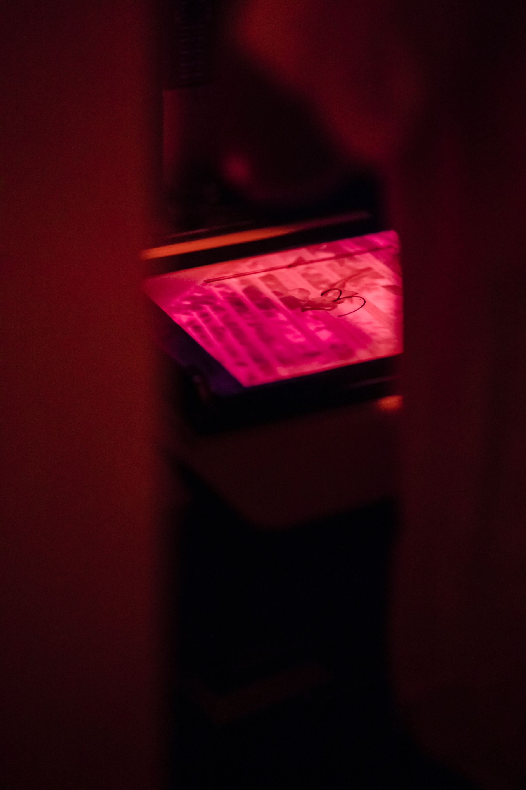
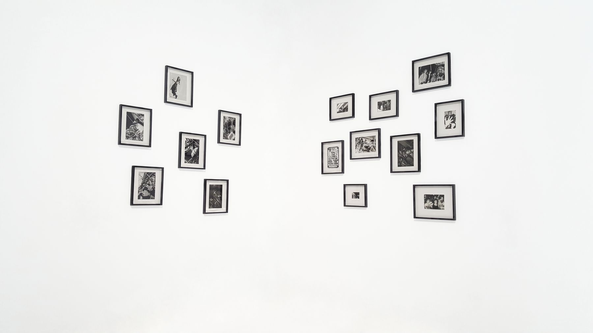

Матовая
Спокойная поверхность без бликов. Для графики и мягкого дневного света.
Печать фотографий на бумаге с характером. Вы выбираете параметры, мы доводим изображение до физического результата.
↘Три поверхности для разного света и настроения. Цена меняется в калькуляторе сразу, без скрытых доплат.
Спокойная поверхность без бликов. Для графики и мягкого дневного света.
Лёгкий блеск и плотные тени. Для цвета, которому нужно сиять.
Глубокий чёрный и тактильная фактура. Для выставочных отпечатков.

ПРОЦЕСС / СВЕТ И БУМАГАИзображение меняется, когда его держишь в руках. Для каждого тиража можно выбрать размер, поверхность и поля, а затем скачать точную спецификацию.

Загрузите файл для предпросмотра и настройте параметры. Файл остаётся на вашем устройстве; в сохранённом черновике хранится только его имя.
Изображение не отправляется в сеть.
Сохранённые параметры доступны в этом браузере. Чтобы снова увидеть изображение, прикрепите исходный файл повторно.